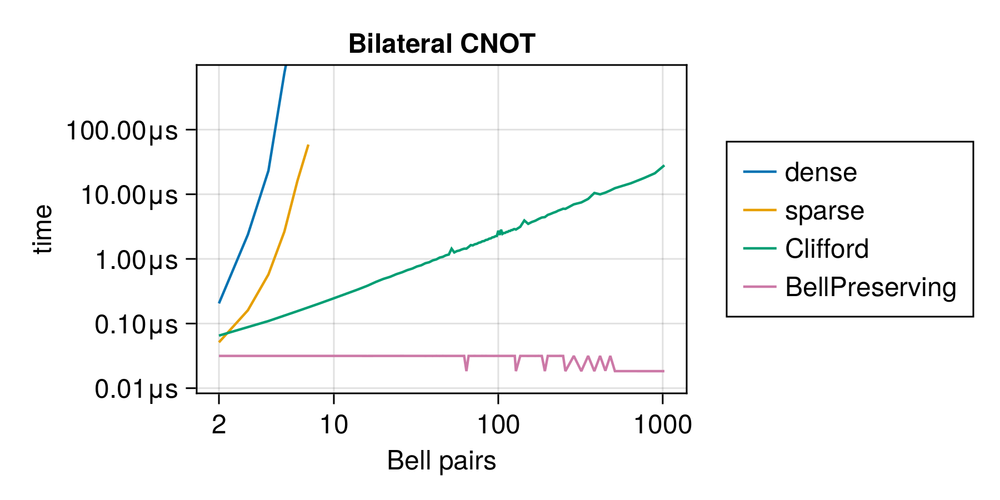

BPGates.jl
Faster Bell-preserving gates for Clifford circuit simulators like QuantumClifford.jl. As long as you are simulating only purification circuits on Bell pairs with only incoherent noise, this tool will be order of magnitudes faster than any other approach. It relies on the fact that all gates in purification circuits are simply permutations of the Bell basis, thus as long as you represent your gates as permutations, and your multi-pair state as a string of Bell basis vectors, operations can be very fast.
On the left, you can explore links to the variety of operations available for simulation. The Full API autogenerated list is a useful reference as well.
Introduction
The simulator is capable of representing only tensor products of one or more of the stabilizer states
±XX
±ZZby tracking only the phases in the first column. For example, +XX -ZZ is represented as the bitstring 01. Gates are internally represented as permutations of the Bell basis (i.e. single-qubit gates are permutations of the four binary numbers 00, 01, 10, 11).
The 00 state, i.e. the state stabilized by +XX +ZZ, is considered somewhat special in some simulations, as the "desired state". If your goals are different, just assume an implicit basis change.
This representation permits drastically faster simulation of entanglement purification circuits.
The simulator is presented in detail in this paper and below you can view a talk and slide deck including discussion about this tool (among others). Useful preliminaries are discussed and the software itself is presented from 25min27sec onwards.
Basis States
As mentioned above, we can represent only Bell states. Here is the basis being used:
BPGates notation | Stabilizer tableaux | Kets | in X basis | in Y basis |
|---|---|---|---|---|
00 | +XX +ZZ | ∣00⟩+∣11⟩ | ∣++⟩+∣--⟩ | ∣i₊i₋⟩+∣i₋i₊⟩ |
01 | +XX -ZZ | ∣01⟩+∣10⟩ | ∣++⟩-∣--⟩ | ∣i₊i₊⟩-∣i₋i₋⟩ |
10 | -XX +ZZ | ∣00⟩-∣11⟩ | ∣+-⟩+∣-+⟩ | ∣i₊i₊⟩+∣i₋i₋⟩ |
11 | -XX -ZZ | ∣01⟩-∣10⟩ | ∣+-⟩-∣-+⟩ | ∣i₊i₋⟩-∣i₋i₊⟩ |
You can convert between these descriptions using
BPGatesto stabilizer state withQuantumClifford.Stabilizer(bpgates_state)- stabilizer state to state vector ket with
QuantumOptics.Ket
Benchmarks
Below you can see the time it takes to perform a single bilateral CNOT gate (the vertical axis) versus the size of the state being acted upon (the number of Bell pairs, horizontal axis). The exponential curves are for the dense and sparse operators acting on kets (as implemented in QuantumOptics.jl). The linearly growing curve is for a Clifford circuit simulation in the tableau formalism (from QuantumClifford.jl which is one of the fastest available implementations).
The flat curve in the nanosecond range is for our implementation.
All of these methods would require a Monte Carlo Quantum Trajectories simulation to model noisy circuits, which we discuss in the section on noisy gates

Short Example
You can initialize a Bell State by specifying the phases and convert it to stabilizer representation.
julia> bell_state = BellState([0,1,1,0])
BellState(Bool[0, 1, 1, 0])
julia> Stabilizer(bell_state)
+ XX__
- ZZ__
- __XX
+ __ZZYou can apply a Pauli Permutation (similarly for single pair permutations or double pair permutations).
julia> BellPauliPermutation(1,1)*BellState(1) |> Stabilizer
+ XX
+ ZZYou can apply a full BP Gate which is the most general representation of a Bell preserving gate on two Bell pairs. The general gate consists of a two Pauli permutations on qubits of one Bell pair, a double pair permutation and two single pair permutations.
julia> apply!(BellState([0,1,1,0]), BellGate(1,2,10,5,6,1,2))
BellState(Bool[0, 0, 0, 0])You can apply a coincidence measurement on the bell states, which will be reset after measurement.
julia> bellmeasure!(BellState([0,1,1,1]), BellMeasure(2,1))
(BellState(Bool[0, 0, 1, 1]), false)You can also apply noisy permutations and measurements.
julia> apply!(BellState([0,0]), PauliNoiseOp(1,1,0,0))
BellState(Bool[0, 1])
julia> apply!(BellState([0,1,1,1]), NoisyBellMeasure(2,1))
(BellState(Bool[0, 0, 1, 1]), false)